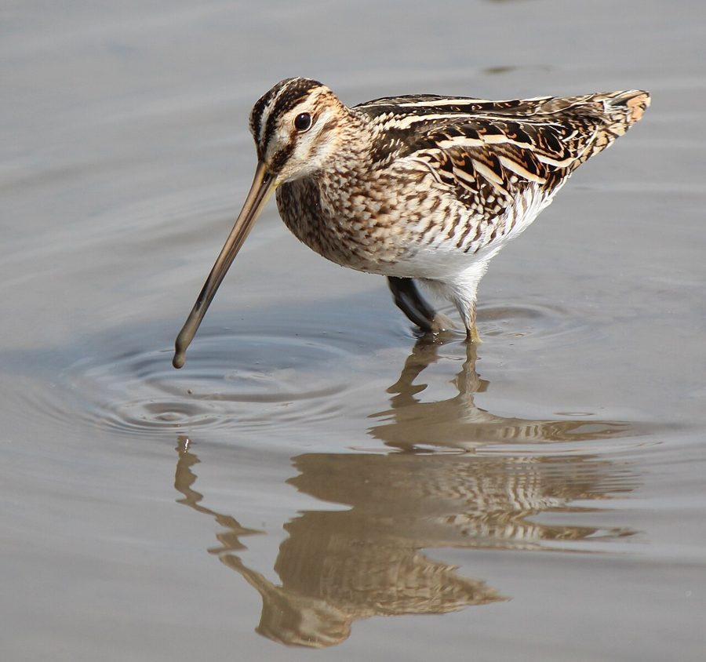

चाहाCommon Snipe
Gallinago gallinago · Scolopacidae · BRD-0101

- Scientific name
- Gallinago gallinago (Linnaeus, 1758)
- Family
- Scolopacidae
- Hindi
- चाहा
- Local names
- chaha, cha ha, chaaha, snipe
- Status here
- native
- Movement
- Winter visitor
- IUCN
- LC
- Review
- audited and independently read
When to look कब देखें
Winter visitor शीतकालीन प्रवासी. Expected mainly in October, November, December, January, February, March, April.
Arrives in October–November from breeding grounds in northern Europe and Asia; departs by March–April. Expected in marshes, reed beds, and wet grassland adjacent to wetlands. All migrants and visitors →
Uses and possibilities उपयोग और संभावनाएँ
Guide: Where the winter birds are: Bakhira, Parvati Arga and the Ayodhya jheels
Drawn from the documented uses in the profile below, where each is labelled traditional, current or a research lead. All uses →
चाहा / Common Snipe
Gallinago gallinago (Linnaeus, 1758) — Scolopacidae
चाहा — ठंड के मौसम में उत्तरी यूरोप और एशिया से आने वाली एक छोटी, लंबी चोंच वाली चिड़िया, जो दलदली ज़मीन और बोगों (marshes) में रहती है। इसकी लंबी चोंच मिट्टी में प्रोब करने (probe करने) के लिए बिल्कुल सही बनी है। इसके शरीर पर भूरे, काले और सफेद रंग की धारियाँ होती हैं, जिससे यह घास में छिप जाता है। यह बहुत सतर्क होता है और इंसान को देखते ही अचानक आसमान में उड़ जाता है, ज़िगज़ैग पैटर्न में।
Quick Identification त्वरित पहचान
| Feature | Description |
|---|---|
| Size | Small wader; 25–27 cm long |
| Distinctive feature | Very long, straight, pointed bill (longer than head) |
| Plumage | Camouflaged brown, buff, and black streaked pattern |
| Head | Buff with dark crown stripe |
| Eyes | Large, positioned high on head |
| Behaviour | Flushed from cover explodes in erratic, zig-zag flight |
| Habitat | Marshes and wet grassland, not in open water |
Field tip: A small, heavily camouflaged wader with a very long straight bill. When flushed from marsh, it explodes in rapid, erratic zig-zag flight with a harsh "scaip" call. The long bill and erratic escape flight are diagnostic. Look on wet ground and in marshy vegetation, not on open water.
हिंदी — कैसे पहचानें:
बहुत छोटी चिड़िया; बहुत लंबी सीधी चोंच।
भूरे-काले रंग में धारियाँ — घास में छिप जाती है।
उड़ते समय ज़िगज़ैग पैटर्न में।
दलदली ज़मीन में, पानी पर नहीं।
Morphology आकारिकी
Biometrics:
| Measurement | Range |
|---|---|
| Total length | 250–270 mm |
| Wing (flattened chord) | 125–145 mm |
| Tail | 60–75 mm |
| Bill | 60–80 mm (longer than head) |
| Tarsus | 30–35 mm |
| Weight | 80–140 g |
Size: 25–27 cm long; wingspan 38–44 cm. Weight 80–140 g. One of the smallest waders in the region.
Plumage: Highly camouflaged. Overall buff, brown, and black streaked and mottled. Crown dark brown with buff stripe down centre. Mantle and scapulars heavily streaked and barred. Underparts buff or white with dark flank streaking. This camouflage is so effective that birds are nearly invisible in marsh vegetation.
Bill: Extremely long (60–80 mm), straight, pointed, slightly downcurved at tip. Darkly coloured. The bill is longer than the head, which is unusual among waders.
Legs and feet: Short, dull greenish or yellowish. Placed rather forward on body.
Eyes: Large, positioned high on head, allowing the bird to look upward while probing.
Sexes: Females average slightly longer in bill and larger in size than males.
Juveniles: Similar to adults but duller.
Vocalisations. Call repertoire:
- Escape call: A harsh, two-syllabled "scaip" or "chap" given in flight when flushed; frequency 2.0–4.0 kHz.
- Display call (drumming): A series of bleating notes produced by tail feathers in a diving display flight (territorial behaviour).
- Contact call: Soft grunting and chirping in flocks.
हिंदी: उड़ते समय तेज़, तीव्र "चाहा-चाहा" या "स्काइप" आवाज़। प्रदर्शन उड़ान में अजीब ड्रमिंग आवाज़।
Behaviour & Ecology व्यवहार और पारिस्थितिकी
Probing forager: Common Snipes are specialized soil and mud probers. They feed on:
- Aquatic insect larvae (chironomid larvae, dragonfly nymphs)
- Earthworms
- Small snails and mollusks
- Seeds and plant material
- Small crustaceans
Feeding technique: Probes into soft mud and soil with its long, sensitive bill, detecting prey by touch (bill tip is highly innervated). Walks slowly through marshes, probing repeatedly. Does not visually hunt like other waders.
Social behaviour: Solitary or in small flocks in winter. Males are highly territorial; defend feeding territories.
Habitat specialization: Strictly dependent on marshes, reed beds, and wet grassland. Requires soft muddy or peaty ground.
Cryptic behaviour: Remains motionless in vegetation when threatened; relies on camouflage. Only flushes when danger is very close, then escapes in erratic flight.
Flight: When flushed, explodes from cover and zigzags rapidly, making itself difficult to follow visually. Flight is extremely erratic.
Predators: Marsh Harrier, Sparrowhawk, occasional Golden Eagle; less vulnerable due to cryptic behaviour and escape flight.
हिंदी: मिट्टी में चोंच डालकर कीड़े खोजता है। घास में छिपा रहता है। उड़ते समय ज़िगज़ैग करता है।
Life Cycle / Phenology जीवन चक्र
Winter visitor: Arrives October–November from breeding grounds in northern Europe and Asia; remains through winter; departs by March–April.
Non-breeding season: Does not breed in eastern UP. Remains solitary or in small flocks on wintering grounds.
Arrival and departure: First birds arrive in October; numbers peak in December–January; departure begins in March, with most gone by April.
Feeding range: Individual snipes maintain small feeding territories throughout winter.
Roosting: Roosts on ground in dense marsh vegetation at night.
हिंदी: अक्टूबर में आता है, अप्रैल तक रहता है। सर्दी में यहाँ बस रहता है, घोंसला नहीं बनाता। अकेले रहता है।
Host Plants or Prey आहार
| Food Type | Examples | Feeding Behaviour |
|---|---|---|
| Aquatic insect larvae | Chironomid larvae, dragonfly nymphs | Probe in mud |
| Earthworms | Various earthworm species | Probe in soil |
| Snails and mollusks | Small freshwater snails | Probe in mud |
| Plant seeds | Sedge and rush seeds | Glean from vegetation |
| Small crustaceans | Copepods, ostracods | Probe and filter |
हिंदी: मिट्टी में चोंच डालकर कीड़े, कीड़ों के लार्वे और केंचुए निकालता है।
Predators / Natural Enemies शत्रु
- Avian predators: Marsh Harrier, Sparrowhawk, occasionally Golden Eagle
- Terrestrial predators: Jackals, foxes, wild boar (on roosting grounds)
- Vulnerability: Reduced due to cryptic behaviour and erratic escape flight
हिंदी: शिकारी चिड़ियाँ और जंगली जानवर इसका शिकार कर सकते हैं।
Agricultural / Human Relevance कृषि प्रासंगिकता
Protected species: Listed in Schedule IV of the Wildlife (Protection) Act 1972, amended 2022. Fully protected; hunting prohibited.
Insect control: Feeding on insect larvae and earthworms provides minor pest control benefits.
Wetland health indicator: Its presence indicates healthy, undisturbed marshes with productive soil fauna.
Game bird heritage: Historically hunted in Europe and North America; no longer permitted in India.
Scientific interest: Display behaviour and vocalizations are subjects of ornithological research.
uses: [] caution: [protected]
हिंदी: यह विधि अधिनियम 1972 की अनुसूची IV के अंतर्गत संरक्षित है।
Expected Locally स्थानीय रूप से अपेक्षित
This species is NOT a field record. The information below describes where Common Snipes should be looked for.
Winter range: Expected in eastern Uttar Pradesh from October to April in marshes, reed beds, and wet grassland adjacent to the Ghaghra and Rapti river systems.
Habitat preference: Soft, marshy ground with dense vegetation; not in open water. Flooded fields and drainage ditches also suitable.
Shy and cryptic: Difficult to observe; usually flushed accidentally. Most observations result from the bird's erratic escape flight.
Peak occurrence: December–February.
Nearest published record: Marshes and wetlands throughout the Ghaghra-Rapti floodplain support wintering snipe populations.
What a first record would be: A dated photograph or video clip clearly showing the long bill and characteristic escape flight in a specific location, with date and GPS, submitted through the About page. In-flight photos showing the erratic zig-zag pattern are valuable.
हिंदी: अक्टूबर से अप्रैल तक दलदली ज़मीन में देखे जाते हैं। बहुत सतर्क होता है। पहला रिकॉर्ड उड़ते हुए फोटोग्राफ के साथ वैध हो सकता है।
Distribution वितरण
Global range: Breeding in northern temperate regions (Europe, northern Asia); wintering throughout southern Palearctic, Africa, and Asia. Multiple subspecies; G. g. gallinago occurs in India.
In India: Distributed as a winter visitor throughout suitable wetlands, particularly northern and eastern regions.
In Uttar Pradesh: Regular winter visitor in marshes and wet areas, particularly eastern districts.
In Basti district / eastern UP: Regular winter visitor to marshes and wetlands; numbers and distribution variable depending on winter conditions and marsh conditions.
Research Questions शोध प्रश्न
- What are the breeding grounds and migration routes of Common Snipes that winter in eastern UP? Do snipes from different breeding populations show fidelity to particular wintering sites?
- How does soil invertebrate abundance and diversity in different marsh types affect snipe distribution and density?
- क्या गहरी जुताई (deep ploughing) और पानी की निकासी (drainage) से सर्दियों में इस चिड़िया के आवास में कमी आई है?
- What are the foraging rates and prey switching behaviour of snipes in response to food availability changes through winter?
- How do display flights and "drumming" sounds function in territorial behaviour, and do wintering snipes show territorial aggression?
- What is the impact of pesticides and wetland pollution on snipe condition and survival during winter?
Similar Species मिलती-जुलती प्रजातियाँ
| Species | Key Difference | Hindi | Field Rule |
|---|---|---|---|
| Jack Snipe (Lymnocryptes minimus) | Much smaller (19 cm); shorter bill | छोटा चाहा | Jack Snipe is noticeably smaller with shorter bill. |
| Painted Snipe (Rostratula benghalensis) | Longer, more curved bill; different plumage pattern | रंगीन चाहा | Painted Snipe has curved bill and more striking coloration. |
| Woodcock (Scolopax rusticola) | Much larger; rounded head; different plumage | अलबेली | Woodcock is much larger and heavier. |
Field rule: Common Snipe is small with a very long straight bill. When flushed, it explodes into erratic zig-zag flight with a harsh "scaip" call. This combination is diagnostic.
Taxonomy & Classification वर्गीकरण
Original description. Described by Carl Linnaeus in 1758 in Systema Naturae, 10th edition, volume 1, page 147. Type locality is Europe (Sweden).
Subspecies. Multiple subspecies recognised globally. Populations wintering in India belong to G. g. gallinago (European breeding populations).
Family and order placement. Order Charadriiformes; family Scolopacidae (sandpipers, snipes, phalaropes). The genus Gallinago contains multiple snipe species found worldwide.
Phylogenetic notes. Molecular studies confirm Gallinago gallinago as distinct from other snipe species. The long, sensitive bill is a key adaptation for probing foraging.
IUCN status rationale. Least Concern globally. Populations are stable and widespread in suitable habitats. The species is protected under the Wildlife Protection Act 1972 (Schedule IV) in India.
हिंदी: विश्वभर में कई स्थानों पर पाया जाता है। भारत में सर्दियों में आता है। पूरी तरह सुरक्षित है।
Photo Gallery फोटो गैलरी
No photos yet — add field photos to media/species/common_snipe/ and run node scripts/sync_photos.js.
Wanted photos:
- Long bill in detail, showing straight pointed structure
- Camouflaged on ground (showing cryptic coloration)
- In erratic zig-zag escape flight
- Probing in marsh
- Flock resting on wet ground
- Head detail showing eye position and stripe
References संदर्भ
- Linnaeus, C. (1758). Systema Naturae per Regna Tria Naturae (10th edn). Laurentii Salvii, Holmiae. Vol. 1, p. 147.
- Ali, S. & Ripley, S. D. (1968). Handbook of the Birds of India and Pakistan. Vol. 2. Oxford University Press, Delhi. Pp. 123–126.
- Cramp, S. & Simmons, K. E. L. (1983). Handbook of the Birds of Europe, the Middle East and North Africa. Vol. 3 (Waders to Gulls). Oxford University Press. Pp. 473–493.
- Milstein, P. le S., Prestt, I., & Bell, A. A. (1970). The breeding ecology of the Snipe. British Birds 63: 487–511.
- GBIF Occurrence Data — Gallinago gallinago, India. GBIF taxon key: to be filled.
- IUCN Red List (2023). Gallinago gallinago — BirdLife International assessment. Status: Least Concern.
Source file: species/fauna/birds/common_snipe.md